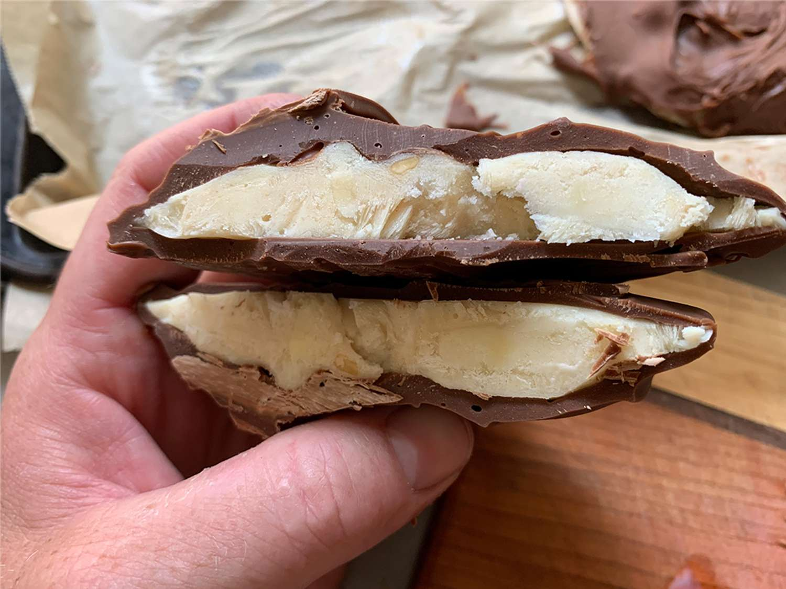

Peanutbuttter Choc-Ices

Description
A healthy alternative to the sugar filled ice-creams purchased at corner shop - cheaper too
Choose the good greek yogurt for live cultures which makes these snacks good for the gut too!
Ingredients
- 240ml Greek Yogurt
- 3 Tablespoon of Peanut butter
- 1 Tablespoon of Honey
- 150g of 75% (or higher) Dark Chocolate
- 1 Tablespoon of Coconut Oil
Cooking Steps
- Mix peanut butter, yogurt and honey in a bowl
- Spoon dollops (choose the size you want) onto a freezer ready dish
- Freeze for 1.5-2 hours
- Melt the chocolate in a bowl and mix in the coconut oil
- Remove the dollops from the freezer and begin dipping into the melted chocolate
- Store in freezer
- Thaw for 5-10 minutes before eating (Unless you can't wait!)
Serves
8-10
Other recipes